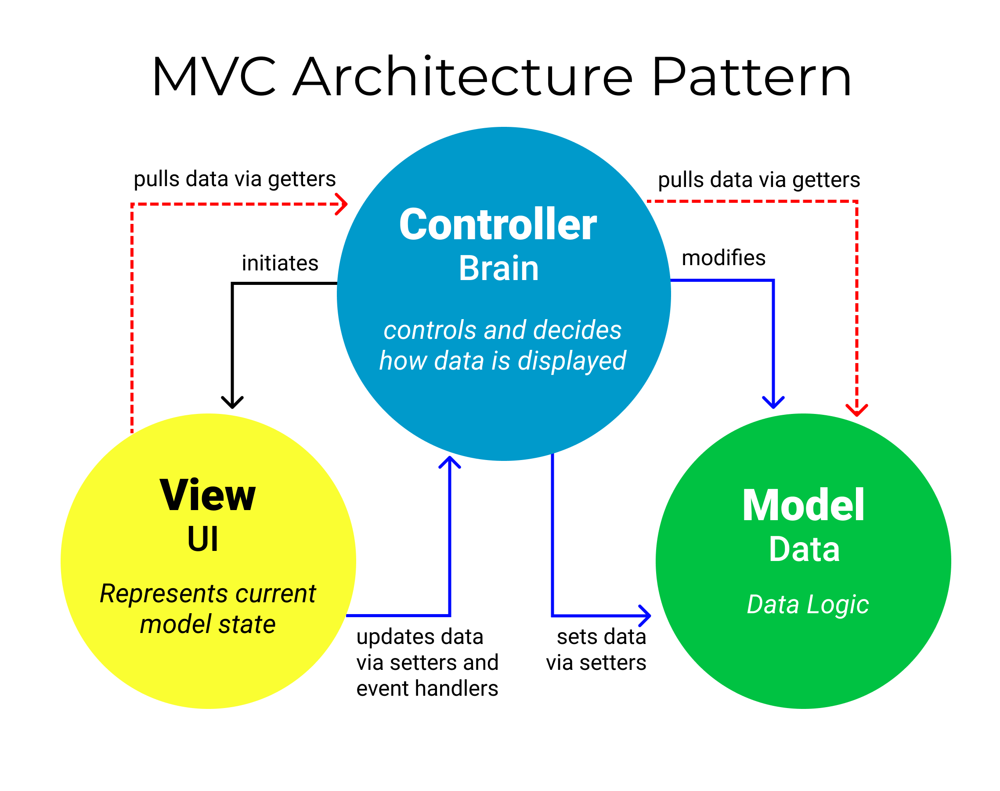

Programmering B 2022 - 2024
Vibenshus Gymnasium
Indhold
- Lektionsbeskrivelser
- Uge 19 Eksamensprojekt
- Uge 18 Eksamensprojekt
- Uge 15+16+17
- Uge 12 + 14 Eksamensprojekt
- Uge 11 Eksamensprojekt
- Uge 9 Eksamensprojekt
- Uge 8 Eksamensprojekt
- Uge 6 Lego_Mindstorms_EV3
- Uge 5 Lego_Mindstorms_EV3
- Uge 4 Lego_Mindstorms_EV3
- Uge 3 Lego_Mindstorms_EV3
- Uge 2 Lego_Mindstorms_EV3
- Uge 1 Lego_Mindstorms_EV3
- Uge 48 algoritmer rekursion generativ_kunst
- Uge 47 algoritmer rekursion generativ_kunst
- Uge 46 algoritmer rekursion generativ_kunst
- Uge 45 pythobra projekt
- Uge 44 pythobra projekt
- Uge 43 pythobra projekt
- Uge 41, 42 pythobra projekt
- Uge 40 pythobra projekt
- Uge 39 pythobra projekt sympy
- Uge 38 sympy
- Uge 37 Databehandling matplotlib csv
- Uge 36 Databehandling csv matplotlib GUI PySide6
- Uge 35
- Uge 34 GUI PySide6
- Uge 33 GUI PySide6
- 2.g : 2022 - 2023
- Uge 23 Prøveeksamen
- Uge 21 Prøveeksamen
- Uge 18 + 19 GUI PySide6
- Uge 17 GUI PySide6
- Uge 13 GUI PySide6
- Uge 12 GUI PySide6
- Uge 11 GUI PySide6
- Uge 5,6,8 og 9 OOP Arkanoid selvstændigt_arbejde
- Uge 4 OOP Arkanoid selvstændigt_arbejde
- Uge 3
- Uge 2 OOP
- Uge 1 OOP
- Uge 50 OOP
- Uge 49 datatyper
- Uge 47 + 48 src animation vektorfunktioner
- Uge 46 løkker
- Uge 45 løkker
- Uge 43 løkker random if_statements
- Uge 41 løkker random if_statements plantuml
- Uge 40 if_statements input
- Uge 39 arcade funktioner if_statements rutediagram plantuml
- Uge 38 arcade funktioner
- Uge 37 arcade funktioner variable
- Uge 36 arcade funktioner variable
- Uge 35 arcade funktioner
- Uge 34 git print
- Uge 33 git
- Uge 32 intro
- Præsentationer
- Opgaver
- UVB
- Om
Lektionsbeskrivelser
Uge 19 Eksamensprojekt
Der var desværre mange af jer, som var fraværende til alle lektionerne i programmering i sidste uge. Det var desværre også de sidste rigtige undervisningslektioner, inden I skal aflevere jeres eksamensprojekter. I denne uge der der nemlig ikke undervisning torsdag og fredag pga. Kristi Himmelfart.
De vigtigste pointer fra fredagens lektioner er:
- Deadline for aflevering af projekterne er søndag d. 12. maj på lectio (og også gerne på jeres git repos).
- Kildekoden til jeres programmer må I gerne deles om.
- Jeres synopser skal udarbejdes individuelt, og skal fylde mellem 5 og 8 sider fraregnet kodestumper, flowcharts og andre figurer. Sørg for at lægge al kode i bilag i synopsen.
- I kan finde en skabelon til opbygningen af synopserne i filerne
synopsis.mdogsynopsis.orgi jeres git repos. I behøver bestemt ikke at skrive i markdown eller ord mode. I må gerne skrive jeres synopser i f.eks. word eller lignende. Når I skal indsætte kodestumper i word, så følg den vejledning, som også står isynopsis.md. - Det skal tydeligt fremgå i jeres synopser og jeres fælles kode, hvilke ansvarsområder de forskellige gruppemedlemmer har haft i projektarbejdet.
- Hvis I bliver i tvivl om, hvordan man dokumentere sin kode, så husk på, hvordan I skulle gøre det, da I skrev SRC sidste år. Ellers kan I finde mere vejledning her: https://programmering.systime.dk/?id=146 og særligt her: https://programmering.systime.dk/?id=200.
- På lectio skal I uploade al jeres kode i en zip-fil samt jeres synopsis. I må også meget gerne indsætte et link til jeres git-repo i jeres synopser.
- Og så det vigtigste. I SKAL have afleveret jeres eksamensprojekter for at kunne komme til eksamen, og I skal gøre det inden deadline.
Uge 18 Eksamensprojekt
Arbejde med eksamensprojekterne. Det er sidste uge med almindelig undervisning ifm projektet. Vi kommer til at tale om, hvad der skal være af indhold i jeres synopser.
Uge 15+16+17
Ingen almindelig undervisning på grund af SOP og teknikfagsuge.
Uge 12 + 14 Eksamensprojekt
Arbejde med eksamensprojekterne.
Uge 11 Eksamensprojekt
Som en del af jeres arbejde med eksamensprojektet er det en god idé at udarbejde et gantt-diagram over projektets forløb. I den forbindelse skal det siges, at der er rigtig mange uger frem til deadline, hvor den almindelige undervisning i programmering er blevet aflyst til fordel for SOP og værkstedsuge i teknikfag.
I kender nok allerede Gantt-diagrammet fra teknologi og teknikfag, men vidste I også, at det kan skrives i plantuml?
Jeg har lavet et eksempel til jer her. I kan selv lave modifikationer til det, eller bruge et helt andet program. I skal dog lægge mærke til, hvor få undervisningslektioner der faktisk er tilbage!
Klik på billedet efter kildekoden, for at se Gantt-diagrammet i fuld størrelse.
@startgantt language da title Gantt-diagram over eksamensprojektet mondays are closed tuesdays are closed wednesdays are closed saturdays are closed sundays are closed project starts 2024-02-22 2024-05-06 to 2024-05-11 are named [Sidste uge] 2024-05-12 is colored in red 2024-03-03 to 2024-03-08 are colored in gray and is named [Studietur] and are closed 2024-03-15 to 2024-03-15 is named [SOP vejledning] and is colored gray 2024-03-25 to 2024-04-1 are closed and is named [Påskeferie] and is colored in gray 2024-04-08 to 2024-04-12 are colored in gray and is named [SOP-dage] and are closed 2024-04-15 to 2024-04-19 are colored in gray and is named [SOP skriveuge] and are closed 2024-04-22 to 2024-04-26 are colored in gray and is named [værkstedsuge] and are closed -- Idegenereringsfase -- [Idegenerering] requires 2 weeks -- Arbejdsfase -- [Prototype Model] on {J. Cleese} starts after [Idegenerering]'s end and requires 3 weeks note bottom Kort Kortdæk Regler end note [Prototype View] on {E. Idle} starts after [Idegenerering]'s end and requires 3 weeks note bottom Implementeret i arcade kortbagside kortforside baggrund end note [Prototype Controller] on {M. Palin} starts after [Idegenerering]'s end and requires 3 weeks note bottom Først cli-prototype Siden GUI-prototype end note -- Afslutningsfase -- [Færdiggøre program] on {J. Cleese} {E. Idle} {M. Palin} starts 2024-04-28 and ends 2024-05-12 [J. Cleese synopsis] starts 2024-04-28 and ends 2024-05-12 [E. Idle synopsis] starts 2024-04-28 and ends 2024-05-12 [M. Palin synopsis] starts 2024-04-28 and ends 2024-05-12 [Deadline] happens at 2024-05-12 hide resources footbox @endgantt

Uge 9 Eksamensprojekt
og
Når ugen er omme skal alle grupper have lagt sig fast på et projekt inden for de udstukne emner. Projektet skal beskrives gennem en projektbeskrivelse med tilhørende problemformulering. Denne projektbeskrivelse skal skrives ind i synopsen og skal godkendes af underviseren.
På vejen til hen til projektbeskrivelsen kommer vi til at arbejde med lidt abstrakte dokumentationsformer såsom brugerhistorier, sekvensdiagrammer, klassediagrammer samt kravspecifikation i form af MoSCoW.
Uge 8 Eksamensprojekt
Vi arbejder i dag videre med opstarten på eksamensprojektet.
Vi skal særligt se på idéudvikling og idésortering, samt få skrevet processen ind i logbogen.
I dag er vi startet op på eksamensprojektet.
I kan finde projektoplægget og den tilhørende aflevering i github classroom her: https://classroom.github.com/a/Ebh4o9kw
I kan yderligere finde præsentationen til opstartsfasen her: https://vibenshus-gymnasium-programmering.github.io/Eksamensprojekt_opstart
Uge 6 Lego_Mindstorms_EV3
og
Resten af undervisningstiden i uge 6 bruges på at skrive synopserne færdige ifm jeres LEGO-robotter.
Uge 5 Lego_Mindstorms_EV3
I dag er I blevet introduceret til afleveringen af jeres rapporter/synopser i forbindelse med jeres arbejde med lego mindstorms-robotterne.
I kan finde jeres afleverings-repo på github classroom her: https://classroom.github.com/a/BUiVwGQZ
Uge 4 Lego_Mindstorms_EV3
Videre arbejde med robotterne og omskrivning af koden til OOP.
I dag skal I refaktorere jeres kode til robotterne, så den bliver objektorienteret. Det vil sige, at I skal opbygge klasser til jeres robotter med passende attributter (objektvariable) og metoder (funktioner, som objektet kan udføre). Sørg for at få skrevet/tegnet nogle klasse- og rutediagrammer, som passer til.
Husk at vi før har anvendt plantuml til at tegne diagrammerne.
(Der findes også mermaid som et javascript-alternativ, men det må I selv sætte jer ind i, hvis I ønsker at anvende det.)
Uge 3 Lego_Mindstorms_EV3
I denne uge arbejdede vi videre med at bygge legorobotter.
Dagens udfordring var, at hver robot mindst skulle anvende en sensor.
Uge 2 Lego_Mindstorms_EV3
Her er kildekoden til demonstrationsrobotten. Brug den til at blive inspireret.
#!/usr/bin/env pybricks-micropython from pybricks.hubs import EV3Brick from pybricks.ev3devices import Motor, UltrasonicSensor, TouchSensor, ColorSensor from pybricks.parameters import Port, Color from pybricks.robotics import DriveBase from pybricks.tools import wait # from pybricks.tools import multitask # from pybricks.tools import run_task import _thread ev3 = EV3Brick() speaker_lock = _thread.allocate_lock() large_motor = Motor(Port.A) ultrasonic_sensor = UltrasonicSensor(Port.S1) touch_sensor = TouchSensor(Port.S2) color_sensor = ColorSensor(Port.S3) def ultrasonic_distance_indicator(): while True: if ultrasonic_sensor.distance() < 50: ev3.light.on(Color.RED) print("Too close") ev3.screen.print("Too close") elif ultrasonic_sensor.distance() < 100: ev3.light.on(Color.YELLOW) else: ev3.light.on(Color.GREEN) wait(500) def touch_sensor_activation(): ev3.speaker.set_speech_options(language="en", voice="m1", speed=200) while True: if touch_sensor.pressed(): speaker_lock.acquire(False) try: print("Oh...you touch my tra la la. Uhm...my ding ding dong") ev3.screen.print("Oh...you touch my tra la la. Uhm...my ding ding dong") ev3.speaker.say("Oh...you touch my tra la la. Mmm...my ding ding dong") finally: speaker_lock.release() def color_sensor_block(): while True: if color_sensor.color() == Color.RED: print("Brake!") ev3.screen.print("Brake!") large_motor.brake() elif color_sensor.color() == Color.GREEN: print("Full speed ahead!") ev3.screen.print("Full speed ahead!") large_motor.run(1050) def main(): print("Start of ev3 demo") ev3.screen.print("Start of ev3 demo") color_sensor_block_thread = _thread.start_new_thread(color_sensor_block, ()) ultrasonic_distance_indicator_thread = _thread.start_new_thread( ultrasonic_distance_indicator, () ) touch_sensor_activation_thread = _thread.start_new_thread( touch_sensor_activation, () ) seconds = 0 while True: print("main loop running for {}".format(seconds)) ev3.screen.print("main loop running for {}".format(seconds)) wait(1000) seconds += 1 main()
I dagens lektioner skal I arbejde videre med jeres legorovere fra sidste gang. I skal have udviklet programmer, så jeres rover kan gennemføre alle missioner fra exoplanetroversimuleringen.
- I dag fik I til opgave at bygge hver jeres robot/rover. Der var et benspænd om, at I kunne måtte bruge 2 motorer og 2 hjul (Vi har ikke så mange hjul tilbage i legosættene).
- Jeres opgave var efterfølgende at få skrevet et eller flere programmer, som kunne føre jeres rover gennem de samme missioner som i exoplanetroversimuleringen fra forrige uge.
- I kunne finde vejledninger/dokumentation her: https://pybricks.com/ev3-micropython/
Uge 1 Lego_Mindstorms_EV3
I dag var første gang, hvor vi "rigtigt" arbejdede med Lego Mindstorms ev3.
Vi byggede ikke rigtig så mange ting/robotter, men I lærte,
- at man kan installere en særudgave af Debian Stretch (en linuxdistribution) specielt designet til ev3, på et mikrosdkort og så boote ev3'eren op fra det.
- at logge ind på jeres ev3'ere gennem en
ssh-forbindelse, hvor I kunne arbejde i enbash-shell, og kode programmer direkte på jeres ev3'ere fra jeres egne laptop.
Nogle af jer lærte også, hvordan VS Code og 2 tilhørende moduler kunne bruges til at tilgå jeres ev3'ere, så udviklingsprocessen blev hurtigere.
Der er guides at finde her:
Tagget siger Lego Mindstorms, men vi arbejdede faktisk med nogle små opgaver om at styre en rover på en fremmed (exoplanet).
Det hele er sat op på hjemmesiden: https://jacobdebel.github.io/Exoplaneten_programmering/
Her findes 7 forskellige missioner, som skal løses gennem programmering. Alt kører på hjemmesiden, så ingen setup er nødvendig.
Uge 48 algoritmer rekursion generativ_kunst
Tilsynsbesøg!
I dag har Rong 1. tilsynsbesøg. Derfor kommer der en række gæster, som skal observere undervisningen. Det skal nok blive aldeles spændende. :)
Uge 47 algoritmer rekursion generativ_kunst
Rong har arbejdet videre med algoritmer og pseudokode.
Uge 46 algoritmer rekursion generativ_kunst
I denne uge er der blevet arbejdet med algoritmer og pseudokode. I kan huske, at I har i to grupper, hvor I set billeder genereret ved hjælp af kode, som I så har skullet beskrive konstruktionen af. Efterfølgende har I byttet beskrivelser og forsøgt at tegne så godt som muligt efter beskrivelsen. Til sidst har I sammenlignet jeres tegninger med de oprindelige billeder.
Uge 45 pythobra projekt
Jeg er ked af, at jeg ikke nåede at overvære jeres præsentationer i torsdags, men sådan er det, når man bliver indlagt på hospitalet med sin datter. Rong var dog sammen med jer, og jer, som var til stede, fik øvet jer i at præsentere for hinanden.
Jeg glæder mig til at høre, hvilke forskellige features I blev inspireret til at implementere i jeres egne programmer, ved at se de andres programmer.
Husk, jeres programmer skal snart være færdige, og I skal skrive en lille brugermanual til dem også.
Der er kun denne uge tilbage.
Her er et billede fra dagens lektioner.

Når I skal merge jeres development branch ind i main branch og efterfølgende give jeres main branch et tag, så se følgende video
https://youtu.be/BF2OHMM86Ik?si=yL-yYZsy5f1xUrmA
I skal gå til ca 31 min. I videoen omtales master branch. For jer hedder denne branch main.
Uge 44 pythobra projekt
Præsentationer
I dag skal den stå på præsentationer af jeres pythobra-projekter for hinanden.
Her er, hvad I skal gøre.
Først skal I have nogle nye præsentationsgrupper.
Præsentationsgrupper
- Nikolaj
- Thomas
- Philip
- Elias Westh
- Hjalte
- Yu-Cheng
- Signe
- Marco
- Oskar
- Yahia
- Jacob
- Nicki
- Casper
- Zakaria
- Adam
- Jens
- Bertram
- Elias Lieberoth
- Thorbjørn
- Valon
- Abdi
- Linus
Hvis nogen ikke dukker op til undervisningen, så saml nogle andre grupper med udgangspunkt i de viste. I skal gerne være 3 i hver gruppe.
Herefter er fremgangsmåden følgende:
Kort præsentation
- Hvert medlem i de nye grupper præsenterer kort, hvordan deres program virker, og hvilke features det har. Der skal ikke vises noget kode frem på nuværende tidspunkt.
- De elever, som lytter til præsentationerne, noterer, hvilke features fra de andres programmer, som de føler sig inspirerede af og gerne vil se mere til. Der skal mindst vælges en feature fra hver af de andre grupper.
Forklaring af kode og opbygning af program
- Hvert gruppemedlem får nu lov til at spørge de andre gruppemedlemmer om, hvordan de har implementeret deres features i deres program.
- De gruppemedlemmer, som bliver spurgt, viser og forklare nu koden til den feature, som de bliver spurgt ind til.
- Det spørgende gruppemedlem tager notater til forklaringerne og/eller tager billeder af programmets udseende og koden.
Hjem til egne grupper
- Alle elever finder tilbage til sine oprindelige arbejdsgrupper.
- Hver elev i sin gruppe præsenterer, hvad de er blevet inspireret af ved at se de andre gruppers arbejde.
Udvælgelse af nye features i egne grupper
- I egne arbejdsgrupper skal I udvælge hvilke nye features, I vil implementere på baggrund af jeres inspirationsrunde.
- Det gruppemedlem, som har taget notater og lignende til den/de valgte feature/features, begynder at forklare, hvordan featuren kan implementeres. Det er meget fint at lade sig inspirere af andre, men det skal tilpasses jeres egne programmer og jeres egen kode.
Gruppearbejde med projekt pythobra.
Almindeligt arbejde med projekt pythobra.
I blev "advaret" om, at I skal præsentere jeres programmer for hinanden.
Uge 43 pythobra projekt
Så er der kommet nogle deadlines på plads ifm pythobra-projektet.
Første deadline I skal forholde jer til, er torsdag d. 2. november (altså i næste uge). Her skal I præsentere jeres forskellige udgaver af pythobra for hinanden. Det er ikke forventet, at jeres programmer er færdige.
Anden deadline er søndag d. 12. november, hvor I skal uploade jeres endelige versioner af jeres programmer til github. Sørg for at merge jeres development-branch ind i main og giv et versionsnummer. I kan se, hvordan man gør det, i den video om anvendelse af git, som jeg har linket til tidligere i selve oplægget til projektet.
Uge 41, 42 pythobra projekt
Der er blevet arbejdet med projektet i undervisningstiden.
Uge 40 pythobra projekt
Vi arbejder videre med projektet pythobra.
I sidste uge havde vi lidt problemer med, at flere grupper fik pushed uønskede filer og mapper til github. Det var f.eks. .idea-mappen, som indeholder opsætningsfiler til pycharm og mappen __pycache__, som oprettes af python, når pythobra_controller køres. Her kommer der en procedure, I kan følge for at få fjernet uønskede filer og mapper fra versionskontrol gennem git.
Opret en fil kaldet
.gitignorei samme mappe som jeres projekt. Hvis man er anvendergit-bashkan man skrive følgende:touch .gitignore
Det burde også være muligt at oprette en
.gitignore-fil gennem pycharm under menuengit. Der skal graves lidt efter den.Åbn
.gitignorei en teksteditor og tilføj linjerne/.idea/ /__pycache__/
Hvis der ligger andre mappe eller filer i projektmappen, som ikke skal deles på jeres gitrepo, så tilføj en linje for hver af dem.
I kan få mere information om brugen af en
.gitignore-fil her:https://www.freecodecamp.org/news/gitignore-file-how-to-ignore-files-and-folders-in-git/
For at fjerne en mappe eller fil, som allerede er tilføjet git, men som ikke skal være det længere, skal I køre følgende kommando i
git-basheller lignende:git rm --cached den_fil_eller_mappe_som_skal_fjernes
Git vil nu vise filen, som slettet.
--cachedsørger for at I kan beholde den lokale kopi af filen/mappen på jeres computer, mens den fjernes fra jeres online git-repo, næste gang Ipusher.- Tjek lige, at filen/mappen faktisk står som slettet ved at køre
git status. - Til sidst skal I
committeogpushetil jeres git-repo, så ændringerne også gemmes online.
Vejledningen er fundet her:
https://dev.to/brandondamue/how-to-quickly-remove-a-committed-file-from-git-version-control-glc
Uge 39 pythobra projekt sympy
pythobra projekt
Hvis alt går vel, skal vi i dag påbegynde et længere projekt, som omfatter brugen af mange af de emner, I har arbejdet med indtil videre. I skal udvikle en lightversion af geogebra, og I skal gøre det i grupper. Derfor kommer I til at skulle arbejde med følgende:
- Udvikling af grafiske brugerflader i
pyside6. - Behandling af matematiske udtryk i
sympy. - Plotning af grafer osv i
matplotlib. - Samarbejde om kode ved hjælp af
git.
Her er linket til projekt Pythobra https://classroom.github.com/a/VMSkhQvX
sympy
I dag skal vi gerne færdiggøre vores forløb om anvendelse af sympy. Vi skal se på plot af funktioner, omdannelse af tekststrenge til matematiske udtryk og endelig skal der løses en matematikopgave.
Uge 38 sympy
I dag begynder vi på et nyt miniforløb omkring symbolsk behandling af matematiske størrelser vha python. Til formålet skal vi anvende biblioteket sympy, som er et CAS-bibliotek (Computer Algebra System) skrevet i python.
Præsentationen kan findes her: Introduktion til sympy.
Uge 37 Databehandling matplotlib csv
Databehandling matplotlib
I dag skal vi se nærmere på biblioteket matplotlib. Find præsentationen her: Plot med matplotlib.
Databehandling csv
Vi arbejder videre med dataindlæsning vha csv.
Uge 36 Databehandling csv matplotlib GUI PySide6
Databehandling csv matplotlib
Vi fortsætter vores arbejde med indlæsning af data fra csv-filer. Efterfølgende vil vi se på, hvordan man kan plotte data vha biblioteket matplotlib.
Databehandling csv
Nu begynder vi på et nyt forløb, som omhandler databehandling. Vi skal se på, hvordan man kan indlæse data, og hvordan man kan plotte data. Der er en serie af præsentationer, som i kan finde her: https://github.com/Vibenshus-Gymnasium-Programmering/Databehandling_praesentationer.
GUI PySide6
Dette bliver sidste dag med arbejde på kryds og bolle. I skal alle sørge for at uploade jeres programmer til github.
Hvis man intet program har, kan I se mit bud på en prototype ved at klone projektet https://github.com/jacobdebel/kryds_og_bolle_pyside6_mvc.git. Herefter kan i gennemgå koden linje for linje, og så skrive kommentarer i filerne, hvor I beskriver, hvad koden gør.
Uge 35
Jeg er desværre syg i dag.
Brug dagens ene lektion på at arbejde videre med kryds og bolle-spillet. Hvis man allerede har et perfekt fungerende grafisk interface til spillet, så udvikl en cli-version (command line interface), som kan køres i terminalen. cli-versionen skal gerne anvende samme model, som den grafiske version.
Uge 34 GUI PySide6
GUI PySide6
Vi arbejder videre med kryds og bolle i dag.
Her er et billede af tavlen fra sidst.

GUI PySide6
I dag ser vi nærmere på udviklingen af et kryds og bolle-spil. Vi skal se på opbygning af projektet vha. Model View Controller.
Her er et billede, som kort viser princippet.

Ellers kan/skal I læse mere om princippet her.
Vi skal diskutere, hvilket indhold, der skal være i hhv model, view og controller.
- Hvad skal skal modellen indeholde?
- Hvad skal skal viewet indeholde (og hvilken fil er der tale om)?
- Hvad skal skal controlleren indeholde?
GUI PySide6
Jeg hjælper dem, som endnu ikke har en fungerende røversprogsoversætter (bare fra dansk til røversprog).
Alle skal sørge for at pushe deres seneste udgaver af røversprogsoversætteren til github i løbet af i dag.
I andre, I skal gå i gang med at udvikle et kryds og bolle-spil. Se opgaven her:
Uge 33 GUI PySide6
GUI PySide6
Vi arbejder videre med røversprogsoversætteren. Nedenfor kan I se, hvad vi skrev på tavlen sidst. Husk de tre tests under jeres udvikling.

GUI PySide6
Her er en guide til dem af jer, som slet ikke er startet på projektet (eller bare vil starte forfra) om den grafiske røversprogsoversætter.
- Følg dette link til opgaven, som ligger på githus classroom: https://classroom.github.com/a/JZaGWWDx
- Accepter opgaven og gå til jeres nye repository (hvis I ikke allerede har det).
- På jeres git repository skal I nu trykke på den grønne knap
Codeoppe til højre og kopiere det lange link. - Find nu jeres stifinder (der hvor I kan åbne mapper og trykke på filer for at åbne dem) og navigér hen til en mappe, hvor I gerne vil have jeres git repository klonet hen til. Det vil typisk være i en mappe med skoleting og programmering.
- Højreklik nu et sted i selve mappen (altså ikke på en fil i mappen) og vælg
git bash here(eller noget der ligner). En bash-terminal skulle gerne åbne op, hvor I er placeret i den rette mappe. - I git bash-terminalen skal I nu skrive
git clone https://url.til.gitrepo. (URL'en skal I selvfølgelig erstatte med den eksakte sti til jeres git repository). Man kan kopiere ind i git bash ved at højreklikke og vælgepaste. - Nu skal I åbne Pycharm. Når programmet er oppe at køre, skal I lukke jeres nuværende projekt (File -> Close Project). Pycharm lukker nærmet helt ned og tilbage er blot et nyt lille vindue.
- I det nye lille vindue trykker I på New Project.
- Under Location skal I vælge den mappe, hvor I klonede jeres git repository tidligere. I kan finde mappen ved at trykke på mappeikonet i højre side.
- Python Interpreter skal I vælge New environment using og så vælge Virtuelenv.
- Location (for interpreteren) skal gerne være en mappe som hedder
venvi samme mappe som projektet. - Base interpreter er nok valgt til at være den pythoninstallation, I installerede til at starte med.
- Slå fluebenet fra for "Create a main.py welcome script"
- Tryk til sidst på Create nede til højre.
- Når pycharm spørger om, I vil benytte de allerede eksisterende filer i projektet, som skal I bare sige ja til dette.
- Endelig er jeres opgave (næsten) klar til brug. I mangler blot at installere
pyside6i jeres virtuelle miljø. Dette gøres på følgende måde:- Tryk på
File -> Settings. - Tryk på
Project: Projektnavnude til venstre. - Tryk på
Python Interpreter. - Tryk nu på plusikonet, og søg efter
pyside6. - Installer
pyside6ved at trykke påInstall Packagenederst til venstre, når I har markeretpyside6i listen.
- Tryk på
- Tjek nu endelig at I har adgang til at bruge QtDesigner. Dette gør I ved at:
- trykke på fanen
Terminalallernederst i Pycharm og så skrive
pyside6-designer.exei terminalen og så trykke enter.Alternativt kan I skrive
start /B pyside6-designer.exe, men jeg sidder ikke lige foran en windowscomputer, så kan ikke lige teste det.
- trykke på fanen
GUI PySide6
Velkommen tilbage fra en velfortjent sommeferie. Nu er I nået i 3.g, og I mangler kun lige det sidste år, for at blive studenter. Inden da skal vi dog lige have styr på en helt masse programmering. :)
Jeg kunne godt tænke mig, at lave lidt om på emnerne, som vi skal arbejde med i år. Jeg er nemlig være ud som censor, og er ved at opbygge et samarbejde med et andet programmeringshold i Odense. Planen er, at I og dem skal samarbejde en smule. Det kan jeg fortælle mere om.
Ellers skal vi lige have styr på hængepartierne fra sidste år. Alle skal lige have udarbejdet et
grafisk andengradsligningsløser, hvor designet er udført vha. QtDesigner. Find jeres tidligere arbejde frem fra gemmerne vha git.
2.g : 2022 - 2023
Uge 23 Prøveeksamen
Vi afholder prøveeksaminerne tirsdag og onsdag. Hold øje med skolen IT-platform (lectio).
Uge 21 Prøveeksamen
Vi afholder spørgetime til den kommende mundtlige årsprøve i programmering B torsdag d. 25. maj kl 09:00 til 10:30.
Her vil jeg fortælle nærmere om selve prøven. Der er 30 minutters forberedelse og 15 minutters eksamination. Spørgsmålene er ukendte, men til gengæld må I anvende alle hjælpemidler inklusiv internet.
Uge 18 + 19 GUI PySide6
Vi arbejder videre med udvikling af grafiske brugerflader til vores røverssprogsoversætter.
Uge 17 GUI PySide6
Tænk at vi sidst så hinanden i uge 12. Det er ikke sådan, når der kommer Eramus+-projekter, påskeferie, covid og værkstedsuger i vejen for undervisningen. Vi må hellere forsøge at komme tilbage på sporet igen.
Jeg er spændt på at se, hvor langt I er kommet med røversprogsoversætteren, hvis I overhovedet er kommet i gang. Det er i hvert fald det projekt, vi arbejder med i denne uges ene lektion.
Uge 13 GUI PySide6
I denne uge er jeg fuldt booket med undervisning ifm Erasmus+-projektet Qute, hvor vi har gæster fra Holland og Østrig. Derfor skal I arbejde selvstændigt med at udvikle en grafisk røversprogsoversætter. I kan finde opgaven her: https://classroom.github.com/a/JZaGWWDx
Husk at jeg kan følge med i, om I for det første acceptere opgaven og hvordan jeres commits ser ud. Der bliver holdt øje med jer. :)
Uge 12 GUI PySide6
I denne uge blev der arbejdet med at udvikle en grafisk andengradsligningsløser. Opgaven ses her: https://classroom.github.com/a/R8wEwYRL
Uge 11 GUI PySide6
Efter mange måneders introduktion til programmering vha arcade-biblioteket bevæger vi os over i udvikling af grafiske brugerflader (GUIs, på engelsk Graphical User Interfaces). Vi kommer til at anvende biblioteket PySide6, som er python bindings til C++-biblioteket Qt6. Qt udtales for øvrigt cute.
Se præsentationerne her: https://github.com/Vibenshus-Gymnasium-Programmering/PySide6_praesentationer
Mens diverse opgaver kan findes på github classroom: https://classroom.github.com/classrooms/108457464-vibenshus-gymnasium-programmering-b-2022-2024
Uge 5,6,8 og 9 OOP Arkanoid selvstændigt_arbejde
I disse fire uger er der blevet arbejdet selvstændigt med arkanoidopgaven.
Uge 4 OOP Arkanoid selvstændigt_arbejde
I denne uges tre lektioner (onsdag morgen og fredag eftermiddag) skal I arbejde med den sidste nye programmeringsopgave til jer. I skal udvikle jeres egne versioner af arkanoidkloner. Jeg har udviklet en skabelon, som I skal tage udgangspunkt i. Find jeres opgaver i det tilhørende git-repo: https://classroom.github.com/a/tglECt4n.
Onsdag er jeg ude som SOP-censor hele dagen, mens jeg skal på hospitalet med min datter fredag. Derfor skal I selv starte op på arbejdet med opgaven. Alt, hvad I har brug, står i opgavens readme-fil. God arbejdslyst!
UPDATE: Jeg kan se, at det langt fra er alle, som har klonet deres git-repo. Derfor bliver der fredag ført fravær på baggrund af jeres git-historik. I skal derfor sørge for at pushe jeres arbejde med opgaven tilbage til jeres git-repo, når I er færdige med dagens arbejde. Jeg kan se både, hvilken kode I har skrevet, og hvornår I pusher koden til jeres git-repos.
Uge 3
- Ingen undervisning, da jeg har været på Erasmusplus-tur til Holland hele ugen.
Uge 2 OOP
- Lidt mere arbejde med PONG og forståelse af klasser.
Uge 1 OOP
Uge 50 OOP
- OOP
I dag står den på introduktion til ObjektOrienteret Programmering (OOP). I har allerede arbejdet lidt med det i SRC'en, men går vi lidt mere i dybden i selve progarmmeringsundervisningen. Præsentationen er stadig WIP (Work In Progress), men I kan finde den her:
- datatyper
En lektion med datatyper. Vi arbejdede med Cæsarkryptering ved hjælp af UTF-8-tabellen.
Uge 49 datatyper
- datatyper
I dag stod den på mere leg med datatyper, med særligt fokus på strenge og hvordan man i nogle tilfælde kan betragte strenge som lister af karakterer. Endelig blev I introduceret til røversprog og vi udviklede en røversprogsgenerator.
- datatyper
I dag skal vi se lidt nærmere på de datatyper, vi har anvendt indtil videre i programmering, og der ud over skal vi arbejde særligt med lister og strenge.
I kan finde den tilhørende præsentation her:
Uge 47 + 48 src animation vektorfunktioner
- I den første uge blev der undervist i animation af vektorfunktioner vha arcade-bibliotektet.
- I den anden uge var der skrivedage ifm SRC'en.
Uge 46 løkker
- løkker
- Arbejde med afleveringsopgaven om løkker på github classroom.
- løkker
Vi skal lige have færdiggjort den sidste opgave omkring konvertering fra binære tal til titalsystemet.
Efterfølgende er der en afleveringsopgave på github classroom omkring løkker. Den kan I finde her: https://classroom.github.com/a/ToTBNP1k
Uge 45 løkker
- løkker
- I dag skal vi blive færdige med introduktionen til while-løkker.
- Efterfølgende er der to forståelsesopgaver.
- Hovedparten af dagens undervisning kommer til at foregå ved, at I skal skrive programmer, som kan konvertere fra almindelige tal i basis ti, til binære tal, og tilbage igen. Derfor vil I få en introduktion til binære tal først. Der står mere om det i præsentationen om løkker.
- løkker
Vi arbejdede med forståelsesopgaver og lidt med while-løkker.
- løkker
I dag står den på introduktion til løkker, for og while.
I kan finde præsentationen her: 08_loekker.org
Uge 43 løkker random if_statements
Uge 41 løkker random if_statements plantuml
- løkker random if_statements
I dag bliver I nødt til at få analyseret kode i gæt et tal, og så udarbejdet et tilsvarende rutediagram i
plantuml.Efterfølgende skal I arbejde med den næste aflevering, som hedder "Flugten på Dune". Find afleveringen på github classroom: https://classroom.github.com/a/ol5aRD7M
- random plantuml
Vi starter lektionen med lige at se et eksempel på en 2.gradsligningsløser. Derefter vil I blive introduceret til konceptet tilfældige tal (random numbers). Dette er der selvfølgelig en præsentation til.
Find præsentationen her: 07_Tilfaeldige_tal.org
Uge 40 if_statements input
I denne uge er der kun en lektion med programmering. I præsentationen om betinget udførelse er der en opgave, som går ud på at programmere en 2.gradsligningsløser vha af input fra brugeren og anvendelse af if-statements. Den opgave skal I arbejde med i dag.
Uge 39 arcade funktioner if_statements rutediagram plantuml
- if_statements rutediagram plantuml
I dag skal vi arbejde med betinget udførelse i programmering. Det går også under navnet if statements.
I kan finde præsentationen her: 06_Betinget_udfoerelse.org.
- arcade funktioner
Vi fortsætter vores arbejde med at omdanne gamle programmer til at tegne billeder vha funktioner. Alle skal pushe deres arbejde til deres gitrepo, inden lektionen er slut.
Nogle enkelte af jer har endnu ikke accepteret opgaven i github classroom. Find opgaven her: https://classroom.github.com/a/uem17Egi.
Uge 38 arcade funktioner
- og arcade funktioner
I ugens lektioner skal der arbejdes med at refaktorisere den gamle kode til at tegne billeder vha
arcadetil at anvende funktioner. Selve opgaven kan findes på github classroom https://classroom.github.com/a/uem17Egi.
Uge 37 arcade funktioner variable
- arcade funktioner
I dag har vi arbejdet videre med præsentationen 04_Funktioner.org samt set en meget kort gennemgang af præsentationen 05_Tegn_med_funktioner.org.
- arcade funktioner
I dagens ene lektion skal vi se på, hvordan man selv kan konstruere funktioner. I kan finde præsentationen her:
Uge 36 arcade funktioner variable
- arcade funktioner variable
I dag skal vi have lidt mere teori omkring variable og definition af egne funktioner.
Vi har følgende 3 præsentationer til gode
Samt denne opgave på github classroom
- arcade funktioner
Dagens ene lektion bruges på at færdiggøre sit billede i arcade. Alle skal have gemt sit arbejde i github gennem github classroom, inden lektionen er omme.
- Hvis man ikke allerede har fundet ud af at anvende
gitgennempycharm, så er det også i dag, at det skal sættes op. Det gør livet noget nemmere for den fremtidige programmør. :) - Hvis man allerede har gemt et billede på github, så skal der tilføjes en ekstra detalje i dag. Dette skal gøres ved
- først at oprette en ny feature branch i git.
- checke den nye branch ud.
- arbejde med sin nye detalje mens der committes til den nye branch.
- Når den nye detalje endelig er helt på plads, checkes main branchen ud.
- I main branchen
mergesfeature branchen, som det sidste.
- Hvis man ikke allerede har fundet ud af at anvende
Uge 35 arcade funktioner
- arcade funktioner
I dag skal vi lige se præsentationen færdig omkring brugen af
arcade. Efterfølgende skal I arbejde med opgaven omkring tegning af et billede vha primitive geometriske figurer. Opgaven ligger på github classroom. Se linket fra sidste lektion. - arcade funktioner
I dag skal I til at anvende biblioteket
arcade. Vi skal bruge det til at tegne billeder vha geometriske figurer.- Hvis I vil forberede jer inden, så læs her: https://learn.arcade.academy/en/latest/chapters/05_drawing/drawing.html
- Jeg vil gennemgå følgende præsentation, som I kan følge med i på github: https://github.com/Vibenshus-Gymnasium-Programmering/Arcade_praesentationer/blob/main/02_Tegn_med_arcade/02_Tegn_med_arcade.org
- I skal arbejde med følgende opgave på github (classroom): https://classroom.github.com/a/-LD3l093
Uge 34 git print
- print
Så går vi for alvor i gang med selve programmeringen. I dag skal vi se på de allerførste simple programstumper i
python.- Hvis I vil forberede jer hjemmefra, så skal I læse indholdet/se videoerne på dette link: https://learn.arcade.academy/en/latest/chapters/04_print_statement/print_statement.html
- Jeg vil gennemgå følgende "præsentation" i undervisningstiden (Det er et destillat af lektien): https://github.com/Vibenshus-Gymnasium-Programmering/Arcade_praesentationer/blob/main/01_printfunktionen/01_printfunktionen.org
- I kan finde alle præsentationer til vores forløb med
arcade-biblioteket her: https://github.com/Vibenshus-Gymnasium-Programmering/Arcade_praesentationer - Endelig kommer I til at skulle arbejde med og aflevere følgende opgave på git classroom: https://classroom.github.com/a/_g8EyUgY
- git
I dag skal der ryddes op i jeres logbøger. Måden, I skal gøre det på, er som følger:
- Opret en ny gren (branch). Den kan f.eks. hedder oprydning.
- Ryd op i de filer, I gerne vil beholde, mens I sletter dem, som I ikke har brug for længere.
- Det kunne f.eks. være én logbogsfil og en fil med en oversigt over, hvordan man skriver markdown- eller org mode-filer.
- Indholdet i jeres logbog skal indeholde et afsnit over de mest anvendelige gitkommandoer og en beskrivelse af, hvordan git skal bruges.
- Der skal også indsættes links til hjemmesider, hvor I kan læse mere om brugen af git.
- Husk at committe en eller flere gange i jeres nye gren.
- Når I er tilfredse med jeres oprydningsgren, skal I merge eller rebase indholdet til jeres main-gren.
- Opret en ny gren (branch). Den kan f.eks. hedder oprydning.
Uge 33 git
- git
Jeg kan se, at stort set alle har fået committet en ændring i deres logbog, og pushet den til github. Godt arbejde!
I dag skal vi se nærmere på, hvad git ellers kan. Til formålet anvender vi https://learngitbranching.js.org/.
Når I rigtig skal bruge git til jeres udvikling af programmer. Foreslår jeg, at I anvender Git Feature Branch workflow, når I arbejder alene, og github flow når I skal til at arbejde sammen i grupper. Begge workflows går ud på at skabe nye grene (branches), og så udvikle nye features i dem. Når en feature er færdig, checker man main-grenen ud og merger med featurebranchen. Alternativt kan man, mens man står i sin featurebranch rebase med main, når featuren er færdig. Dette øver vi os på med logbogen.
I logbogen skal I som minimum skrive de kommandoer ned, som skal bruges, når man arbejder med git feature branch workflow. Altså beskriv arbejdsgangen.
- git
Sidste gang gik der meget tid med download og opsætning af programmer.
Dagens program er:
- Alle skal have downloadet deres logbog fra deres tilhørende
git-repo. - Alle skal have læst README-filen og de tilhørende logbogsfiler (.md og .org)
- Alle skal have skrevet nogle noter i deres logbog, hvor der anvendes markdown- eller org mode-notation.
- Noterne skal som minimum beskrive, hvilke kommandoer der skal køres for at
committe, ogpusheændringer. - Alle skal glemme deres logbog ved at
committeændringerne. - Alle skal have
pushetderes logbøger til deresgit-repos.
- Alle skal have downloadet deres logbog fra deres tilhørende
Uge 32 intro
- intro
Dagens lektie
Alle skal gerne have installeret
git,pythonog en editor/et IDE (vælg pycharm, hvis I er i tvivl. Se præsentationen fra sidste gang for en vejledning til installation af programmerne.)Dagens program
Vi skal i dag arbejde med brugen af
gitog vi tager udgangspunkt i præsentationen om netopgither. I kan også finde linket til præsentationen under fanen Præsentationer her på siden. - intro
I dag står den på introduktion til faget programmering B. I kan finde den tilhørende præsentationer under fanen Præsentationer her på siden.
Efter selve introduktionen til faget går vi så småt i gang med at installere det programmel (det danske ord for software), som vi skal bruge.
https://vibenshus-gymnasium-programmering.github.io/Introduktion/
Post Scriptum Så er vi ligesom i gang. Det var dejligt at lære jer at kende. Det skal nok blive et rigtig godt år!
Præsentationer
Eksamensprojekt
Her er et link til præsentationen knyttet til opstarten af eksamensprojektet.
https://vibenshus-gymnasium-programmering.github.io/Eksamensprojekt_opstart
Algoritmer, rekursion og generativ kunst
Her er et link til en lille beskrivelse af det, der blev arbejdet med i forbindelse med forløbet omkring algoritmer, rekursion og generativ kunst.
https://github.com/Vibenshus-Gymnasium-Programmering/Algoritmer_rekursion_generativ_kunst
Databehandling
Her er et link til præsentationerne omkring brugen af csv og pandas til indlæsning af datafiler, plot af data med matplotlib samt behandling af matematiske objekter med sympy.
https://github.com/Vibenshus-Gymnasium-Programmering/Databehandling_praesentationer
GUIs - Pyside6
Her er et link til præsentationerne omkring udvikling af grafiske brugerflader vha PySide6.
https://github.com/Vibenshus-Gymnasium-Programmering/PySide6_praesentationer
SRC - Vektorfunktioner i matematik og programmering
Her er et link til præsentationen omkring vektorfunktioner, og hvordan man kan animere dem i python ved hjælp af biblioteket arcade, som I kender allerede.
Arcade
Her er et link til alle præsentationerne anvendt i forløbet omkring arcade-bibliotektet.
https://github.com/Vibenshus-Gymnasium-Programmering/Arcade_praesentationer
Hver præsentation er blot en org mode-fil, som vil blive fremvist i emacs. Fidusen ved dette er, at kodestumperne kan eksekveres direkte fra emacs, og der kan ændres i koden direkte, uden at skulle åbne et andet program.
Git
Her er præsentationen til opsætning af og opgaverne om git.
https://vibenshus-gymnasium-programmering.github.io/Git_praesentation/
Introduktion til faget
Her er præsentationen til faget. Åbn linket i en anden tab/et andet vindue.
https://vibenshus-gymnasium-programmering.github.io/Introduktion/
Opgaver
Eksamensprojekt
Her er linket til jeres eksamensprojektoplæg.
https://classroom.github.com/a/Ebh4o9kw
Skabelon til censor:
https://github.com/Vibenshus-Gymnasium-Programmering/Eksamensprojekt_pro_B
Her til jeres eksamensprojekt skal I huske også at aflevere synopsis og produkt (koden) på skolens IT-platform (lectio).
Deadline er d. 12. maj 2024, og denne må ikke under nogen omstændigheder overskrides.
Lego mindstorms-robotter
Her er linket til opgaven om at udvikle en lego mindstorms-robot, hvor koden er skrevet i python.
https://classroom.github.com/a/BUiVwGQZ
Skabelon til censor:
https://github.com/Vibenshus-Gymnasium-Programmering/Lego_mindstorms_opgave
Databehandling - Pythobra
Her er linket til opgaven om at udvikle en lightversion af geogebra vha. csv, sympy, matplotlib og pyside6.
https://classroom.github.com/a/VMSkhQvX
Skabelon til censor:
https://github.com/Vibenshus-Gymnasium-Programmering/Databehandling_projekt_Pythobra
PySide6
Opgave 03 Kryds og bolle
Her er linket til opgaven om at udvikle kryds og bolle vha PySide6.
I denne omgang der er ingen skabeloner, så I skal selv anvende tidligere viden til at opbygge jeres projekt.
https://classroom.github.com/a/-ALtxQRV
Skabelon til censor: https://github.com/Vibenshus-Gymnasium-Programmering/PySide6_Kryds_og_bolle
Opgave 02 Røversprogsoversætter
Her er linket til opgaven om at udvikle en grafisk brugerflade til en røversprogsoversætter.
https://classroom.github.com/a/JZaGWWDx
Skabelon til censor: https://github.com/Vibenshus-Gymnasium-Programmering/roeversprogsoversaetter.git
Opgave 01 Grafisk andengradsligningsløser
Her er linket til jeres opgave med at udvikle en grafisk brugerflade til en andengradsligningsløser.
https://classroom.github.com/a/R8wEwYRL
Skabelon til censor: https://github.com/Vibenshus-Gymnasium-Programmering/PySide6_andengradsligningsloeser.git
Arcade
Opgave 06 Arkanoid
Her er linket til jeres opgave omkring udviklingen af en Arkanoid-klon.
https://classroom.github.com/a/tglECt4n
Skabelon til censor: https://github.com/Vibenshus-Gymnasium-Programmering/Opgave_06_Arkanoid.git
Opgave 05 Tegn med løkker
Her er linket til jeres opgave omkring anvendelse af for-løkker.
https://classroom.github.com/a/ToTBNP1k
Skabelon til censor: https://github.com/Vibenshus-Gymnasium-Programmering/Arcade_Opgave_5_Tegn_med_loekker.git
Opgave 04 Flugten på Dune
Her er linket til jeres første spilopgave. Spillet skal være rent tekstbaseret og benytter sig af betinget udførelse (if statements) og tilfældige tal (random numbers).
https://classroom.github.com/a/ol5aRD7M
Skabelon til censor: https://github.com/Vibenshus-Gymnasium-Programmering/Arcade_Opgave_04_Flugten_paa_Dune.git
Opgave 03 Tegn med funktioner
Her er linket til jeres tredje opgave. I denne opgave skal I omskrive jeres tidligere opgave, så I anvender variable og funktioner til at tegne jeres billeder.
https://classroom.github.com/a/uem17Egi
Skabelon til censor: https://github.com/Vibenshus-Gymnasium-Programmering/Arcade-Opgave-03-Tegn-med-funktioner.git
Opgave 02 Tegn et billede
Her er linket til jeres anden opgave. I denne opgave skal I anvende biblioteket arcade til at tegne billeder vha geometriske figurer. Det er en øvelse i at kalde funktioner i python.
https://classroom.github.com/a/-LD3l093
Skabelon til censor: https://github.com/Vibenshus-Gymnasium-Programmering/Arcade_Opgave_02_Tegn_et_billede.git
Opgave 01 Printfunktionen
Her er linket til jeres første opgave, som har noget med pythonkode at gøre.
https://classroom.github.com/a/_g8EyUgY
Sørg for at klone jeres tildelte repo ned på jeres lokale maskine.
Skabelon til censor: https://github.com/Vibenshus-Gymnasium-Programmering/Arcade_Opgave_01_Foerste_program.git
Logbog
Opret jeres logbog ved at følge linket her: https://classroom.github.com/a/slPR9059
Sørg for at føre logbog hver uge. Der bliver holdt øje med jer. :)
UVB
Eksamensprojekt
Indhold og fokus
Arbejdet med eksamensprojektet er inddelt i 3 faser. En opstartsfase, en arbejdsfase samt en afslutningsfase. Opstartsfasen lægger ud med gruppedannelse ud fra projektoplæggets 5 overemner og bliver efterfulgt af idégenerering, idésortering, kravspecifikation samt projektbeskrivelse. Der kan ses mere om denne opstartsfase i den tilhørende præsentation under anvendt materiale.
Faglige mål
Eleverne skal kunne:
- bruge programmering til at undersøge et emne eller problemområde, med henblik på – via programmets funktion - at skabe ny indsigt eller til at løse et problem
- anvende avancerede konstruktioner i et programmeringssprog
- redegøre for arkitekturen af programmer på forskellige abstraktionsniveauer, herunder relationen mellem brug og funktion
- redegøre for simple specifikationsmodeller og realisere disse i simple velstrukturerede programmer samt teste disse
- demonstrere viden om fagets identitet og metoder
- arbejde inkrementelt og systematisk i programmeringsprocessen.
Kernestof
Kernestoffet er:
- programmeringssprog og elementer i programmers opbygning, herunder variabler, typer, udtryk, kontrolstrukturer, parametrisering/abstraktionsmekanismer, rekursion, polymorfi og algoritmemønstre
- arkitekturen for programmers interaktion med omgivelserne med henblik på hændelsesstyret interaktion og interaktion mellem systemer
- generiske programdele og biblioteksmoduler
- arbejdsgange og systematik i programmeringsprocessen, herunder test og fejlfinding
- abstrakte programmeringsbeskrivelser og dokumentation.
Anvendt materiale
- Oplæg til eksamensprojektet: https://github.com/Vibenshus-Gymnasium-Programmering/Eksamensprojekt_pro_B
- Præsentation i forbindelse med opstarten på eksamensprojektet: https://vibenshus-gymnasium-programmering.github.io/Eksamensprojekt_opstart
Arbejdsformer
- Idé-generering og -sortering
- Gruppearbejde
- Afrapportering
Robotstyring - Lego Mindstorms
Indhold og fokus
Skolen ligger inde med en lille beholdning Lego Mindstorms ev3-robotter. I stedet for at anvende Legos eget blokprogrammeringssprog er der blevet installeret en specialdesignet linuxdistribution på hver af robotterne, hvorved det har været muligt at programmere robotterne i (micro)python. Der er blevet anvendt installations guides og tutorials mv fra https://pybricks.com/ev3-micropython/index.html. Man kan se flere kilder under anvendt materiale.
Ud over undervisning i anvendelsen af pybricks-bibliotekerne til styring af Legorobotterne er eleverne også blevet undervist i at tilgå Unix-like operativsystemer gennem ssh, navigere rundt i en bash-shell, samt editere pythonfiler direkte i shell'en gennem brugen nano (og lidt vim). Senere hen blev Visual Studio Code også anvendt sammen med ev3-plugins, så skrivning og upload af kode til ev3-robotterne blev gjort mere tilgængeligt for eleverne.
Faglige mål
Eleverne skal kunne:
- bruge programmering til at undersøge et emne eller problemområde, med henblik på – via programmets funktion - at skabe ny indsigt eller til at løse et problem
- anvende avancerede konstruktioner i et programmeringssprog
- redegøre for arkitekturen af programmer på forskellige abstraktionsniveauer, herunder relationen mellem brug og funktion
- redegøre for simple specifikationsmodeller og realisere disse i simple velstrukturerede programmer samt teste disse
- arbejde inkrementelt og systematisk i programmeringsprocessen.
Kernestof
Kernestoffet er:
- arkitekturen for programmers interaktion med omgivelserne med henblik på hændelsesstyret interaktion og interaktion mellem systemer
- generiske programdele og biblioteksmoduler
- arbejdsgange og systematik i programmeringsprocessen, herunder test og fejlfinding
- abstrakte programmeringsbeskrivelser og dokumentation.
Anvendt materiale
- Information og opgave findes her: https://github.com/Vibenshus-Gymnasium-Programmering/Lego_mindstorms_opgave
Arbejdsformer
- Gruppearbejde
- Projekt
- Afrapportering
Algoritmer, rekursion og generativ kunst
Indhold og fokus
Se under anvendt materiale.
Faglige mål
Eleverne skal:
- anvende avancerede konstruktioner i et programmeringssprog
Kernestof
Kernestoffet er:
- programmeringssprog og elementer i programmers opbygning, herunder variabler, typer, udtryk, kontrolstrukturer, parametrisering/abstraktionsmekanismer, rekursion, polymorfi og algoritmemønstre
- abstrakte programmeringsbeskrivelser og dokumentation.
Anvendt materiale
- En kort beskrivelse af indholdet i forløbet: https://github.com/Vibenshus-Gymnasium-Programmering/Algoritmer_rekursion_generativ_kunst
Arbejdsformer
- "Analog" programmering med papir og tuscher.
- Individuelt arbejde
- Gruppearbejde
Databehandling med cvs, matplotlib og sympy
Indhold og fokus
Eleverne er i første omgang blevet introduceret til bibliotekterne csv og matplotlib, som er blevet brugt til henholdsvis at indlæse datafiler og til at visualisere indholdet af dem. Arbejdet bestod først i at afprøve og forstå givne programstumper for til sidst at kunne importere og visualisere selvvalgte datafiler.
Biblioteket sympy er efterfølgende blevet introduceret til behandling af matematiske udtryk. Det være sig omskrivning af matematiske udtryk, løsning af ligninger og ligningssystemer, infinitesimalregning samt plot af funktioner. Under plot af funktioner er eleverne blevet vist, hvordan sympy kan plotte direkte, og hvordan det kan kombineres med matplotlib for at få bedre kontrol over plottes udseende.
Som afslutning på forløbet har eleverne arbejdet med et projekt kaldet pythobra, hvor de har udviklet deres egne (light-)versioner af geogebra eller lignende matematiske værktøjer. I projektet har de kombineret deres viden om grafiske brugerflader udviklet pyside6 samt deres viden om databehanling med csv, matplotlib og sympy. I projektet har eleverne arbejdet sammen i mindre grupper og anvendt git som samarbejdsplatform og til versionskontrol.
Faglige mål
Eleverne skal:
- bruge programmering til at undersøge et emne eller problemområde, med henblik på – via programmets funktion - at skabe ny indsigt eller til at løse et problem
- behandle problemstillinger i samspil med andre fag
- anvende avancerede konstruktioner i et programmeringssprog
- redegøre for arkitekturen af programmer på forskellige abstraktionsniveauer, herunder relationen mellem brug og funktion
- rette tilpasse og udvide avancerede programmer
- arbejde inkrementelt og systematisk i programmeringsprocessen.
Kernestof
Kernestoffet er:
- programmeringssprog og elementer i programmers opbygning, herunder variabler, typer, udtryk, kontrolstrukturer, parametrisering/abstraktionsmekanismer, rekursion, polymorfi og algoritmemønstre
- arkitekturen for programmers interaktion med omgivelserne med henblik på hændelsesstyret interaktion og interaktion mellem systemer
- generiske programdele og biblioteksmoduler
- arbejdsgange og systematik i programmeringsprocessen, herunder test og fejlfinding
- abstrakte programmeringsbeskrivelser og dokumentation.
Anvendt materiale
- Samlede præsentationer omkring databehandling: https://github.com/Vibenshus-Gymnasium-Programmering/Databehandling_praesentationer
- Større projekt om udvikling af geogebraklon: Projekt Pythobra
Arbejdsformer
- Use-Modify-Create
- Plenumpræsentationer
- Småopgaver
- Gruppearbejde i git
- Projektarbejde
- Afrapportering
Udvikling af GUIs med pyside6
Indhold og fokus
Til udvikling af grafiske brugerflader er der blevet anvendt biblioteket Qt for python, som i folkemunde blot hedder pyside6 i nuværende version.
Man kan både udvikle de grafiske brugerflader "i hånden" (skrive koden direkte) eller man kan designe brugerflader i programmet Designer. Begge dele er blevet introduceret.
Faglige mål
Eleverne skal kunne:
- bruge programmering til at undersøge et emne eller problemområde, med henblik på - via programmets funktion - at skabe ny indsigt eller til at løse et problem
- redegøre for arkitekturen af programmer på forskellige abstraktionsniveauer, herunder relation mellem brug og funktion
- rette, tilpasse og udvide avancerede programmer
Kernestof
Kernestoffet er:
- arkitekturen for programmers interaktion med omgivelserne med henblik på hændelsesstyret interaktion og interaktion mellem systemer.
Anvendt materiale
- Samlede præsentationer om GUI-udvikling: https://github.com/Vibenshus-Gymnasium-Programmering/PySide6_praesentationer
- Diverse opgaver:
Arbejdsformer
- Use-Modify-Create
- Individuelle opgaver
Grundlæggende programmering med python arcade
Indhold og fokus
Til introduktion til de basale elementer i programmering er bibliotektet arcade (https://api.arcade.academy/en/latest/) anvendt. arcade er blevet installeret gennem anvendelse af virtuelle miljøer og pip.
Ved basale elementer menes der:
- variable
- (simple) datatyper
- funktioner
- Betinget udførsel (if-statements)
- Løkker
Yderligere er OOP også introduceret vha arcade-biblioteket.
Meget af undervisningen er blevet inspireret af indholdet i onlinebogen Arcade Academy - Learn Python. Kapitlerne/undersiderne kan dog godt ændre sig med tiden, så derfor er der udviklet/oversat undervisningspræsentationer på dansk med tilsvarende indhold. Disse præsentationer kan findes her på siden under fanen Præsentationer og afsnittet Arcade. Præsentationerne er skrevet i orgmode med indlejret python-kode, og er lagt op på github. Med den rette opsætning af emacs kan pythonkoden i præsentationerne køres interaktivt i emacs, mens eleverne kan følge med i præsentationen på github og selv nemt kan kopiere kodestumperne ind i deres IDE.
Præsentationerne har været opbygget med en del småopgaver, som nemt kunne kopieres ind i pycharm eller lignende og løses simpelt. Derudover har der dog også været en række "større" opgaver, som eleverne har tilgået gennem github classroom. Hver elev har derfor fået sit eget gitrepo til hver af disse opgaver, som kun de og underviseren har adgang til. Eleverne har så "afleveret" dagens arbejde med at pushe deres sidste ændringer. På den måde har det været muligt løbende at holde øje progressionen. Selve opgaverne kan også findes her på siden under fanen Opgaver og afsnittet Arcade.
Faglige mål
Eleverne skal kunne:
- anvende avancerede konstruktioner i et programmeringssprog
- rette, tilpasse og udvide avancerede programmer
Kernestof
Kernestoffet er:
- programmeringssprog og elementer i programmers opbygning, herunder variabler, typer, udtryk, kontrolstrukturer,
parametrisering/abstraktionsmekanismer, rekursion, polymorfi og algoritmemønstre - generiske programdele og biblioteksmoduler
Anvendt materiale
- Samlede præsentationer om grundlæggende programmering og arcade: https://github.com/Vibenshus-Gymnasium-Programmering/Arcade_praesentationer
- Diverse opgaver:
Arbejdsformer
- Use-modify-create
- Individuelt
- Gruppearbejde
- Afrapportering
Git
Indhold og fokus
- Installation af git
- Introduktion til brug af git i
bash(kommandolinjen) på lokal maskine. - Introduktion til github og github classroom.
- Introduktion til Git Feature Branch workflow, når man arbejder selvstændigt.
- Introduktion til github flow, når man arbejder sammen med andre.
- Der er blevet leget med de tutorials, som ligger på https://learngitbranching.js.org/.
- Eleverne er blevet opfordret til at føre deres logbog i et git-repo på github classroom, hvor man f.eks. kan skrive sin tekst i enten
markdown- ellerorg mode-syntaks.
Faglige mål
–
Kernestof
–
Anvendt materiale
- En præsentation om brugen af git: https://vibenshus-gymnasium-programmering.github.io/Git_praesentation/
Arbejdsformer
- Individuel
- Mindre grupper
Python og pycharm
Indhold og fokus
I undervisningen er der anvendt python 3, som programmeringssprog og pycharm er blevet introduceret som IDE. Det har været frit for eleverne at vælge en anden editor, hvis de har ønsket det. Underviseren har selv anvendt emacs.
Faglige mål
–
Kernestof
–
Anvendt materiale
- En introduktionspræsentation til faget og installation af programmer: https://vibenshus-gymnasium-programmering.github.io/Introduktion/
Arbejdsformer
- Individuel
Om
Dette er en simpel hjemmeside knyttet til programmering B på Vibenshus Gymnasium for skoleårene 2022-2024.
Faktisk er der blot tale om en simpel org-mode-fil, som er eksporteret til html og css vha. https://github.com/fniessen/org-html-themes.